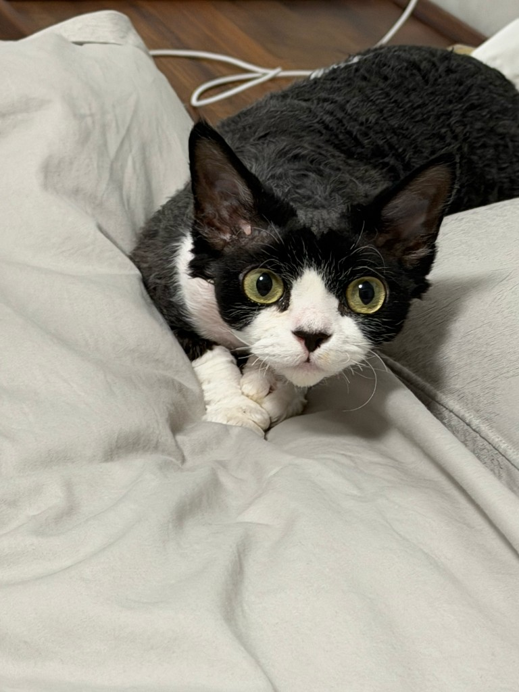
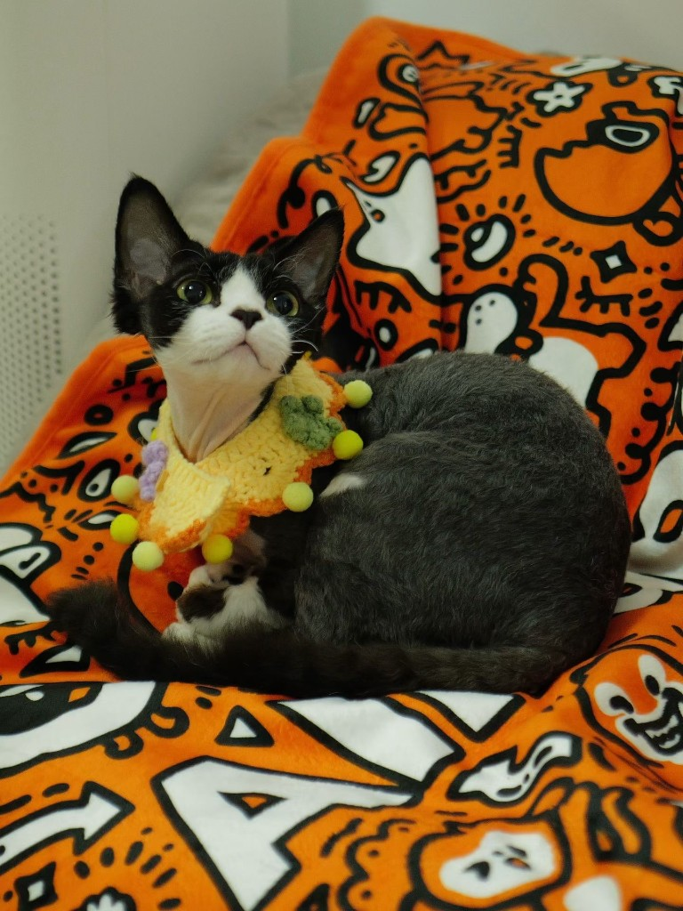

喵～
卷卷毛
关于 Mini
🐾
黑白燕尾服
头顶和背部是深邃的黑色，胸口和爪子雪白——像穿着永远端正的小礼服。
👂
精灵大耳朵
德文卷毛猫标志性的超大耳朵，让她看起来像一只来自童话里的小精灵。
✨
天鹅绒卷毛
短而密的波浪卷毛发，摸起来像天鹅绒一样柔软，是 Devon Rex 独有的质感。
💛
黄绿色大眼睛
圆溜溜、亮晶晶的眸子，好奇地打量这个世界——每一眼都让人心软。
Mini 的日常
每一张照片里，都是她独一无二的小个性

德文卷毛猫
Devon Rex · 猫界的「小精灵」
德文卷毛猫起源于英国德文郡，以柔软卷曲的短毛、巨大的耳朵和纤细的身形闻名。它们性格活泼、亲人，喜欢参与主人的每一件事——Mini 正是这样一只充满好奇心的小家伙。
- 毛发短而卷，掉毛相对较少
- 体型娇小，动作敏捷
- 性格粘人，爱撒娇
- 被昵称为「狗猫」——因为会像小狗一样跟着你
大耳朵 · 卷卷尾 · Mini
Mini 的时间线
-
来到这个世界
Mini 的生日——从这一天起，家里多了一个小精灵。
-
探索、玩耍、撒娇
趴在毯子上、探出头看镜头、戴着钩针围脖——生活就是一场小冒险。